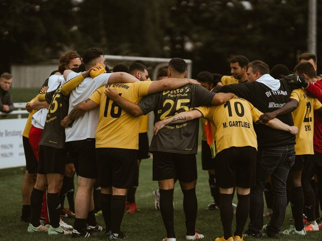
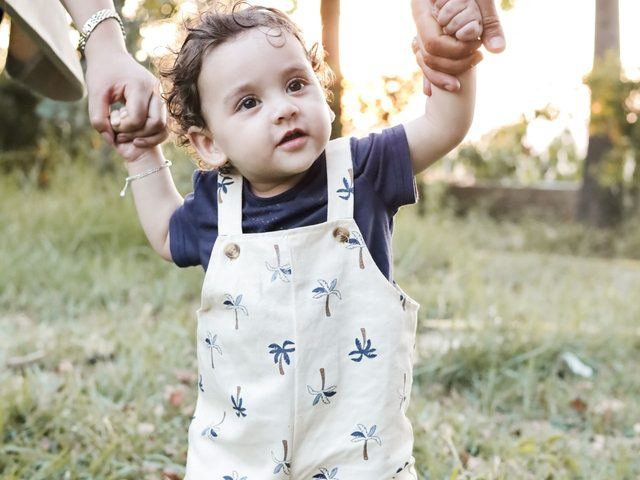
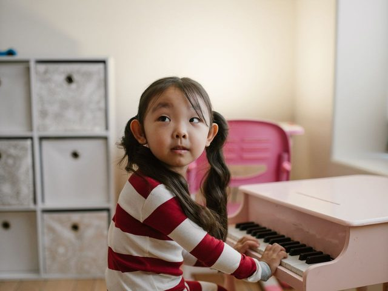

UNIT 34 · VOCABULARY
其他名詞（4）
Other nouns (4)
40 個單字聽・唸・用
本單元單字一覽
其他名詞最後一部分，secret 到 principle，共 40 個。注意 thief → thieves、speech → speeches，以及 tear 當「眼淚」和「撕」讀音不同。
secretsectionsenseshoresilenceskillsocietysoulspeechspeedspiritstatesteamstepstonestylesuccesssymbolsystemTaiwanesetalentteartermthiefthoughttitletowertradetraditiontreasuretruthtunneluniversevaluevictorywarweddingwoodnetprinciple
每個字都有 🔊，先聽發音、跟著唸，再看例句。
單字 1–4

secret
祕密n.
Can you keep a secret?
你能保守祕密嗎？
你能保守祕密嗎？
section
部分；區域；（報紙）版n.
Dad always reads the sports section first.
爸爸總是先看體育版。
爸爸總是先看體育版。
👃
sense
感覺；判斷力；道理n.
Your idea makes sense.
你的想法有道理。
你的想法有道理。

shore
岸；海岸；湖岸n.
We walked along the shore and collected shells.
我們沿著海岸走、撿貝殼。
我們沿著海岸走、撿貝殼。
單字 5–8

silence
安靜；沉默n.
There was silence in the classroom during the test.
考試時教室裡一片安靜。
考試時教室裡一片安靜。
skill
技能；技巧n.
Cooking is a useful life skill.
烹飪是一項實用的生活技能。
烹飪是一項實用的生活技能。
society
社會n.
Everyone is an important part of society.
每個人都是社會的重要一份子。
每個人都是社會的重要一份子。
🕯️
soul
靈魂；人n.
Music is food for the soul.
音樂是心靈的食糧。
音樂是心靈的食糧。
單字 9–12
speech
演講；說話n.
I have to give a speech in front of the class.
我要在全班面前演講。
我要在全班面前演講。

speed
速度n.
The train runs at a speed of 300 km per hour.
這列火車以每小時三百公里的速度行駛。
這列火車以每小時三百公里的速度行駛。

spirit
精神；靈魂n.
Our team has great team spirit.
我們隊很有團隊精神。
我們隊很有團隊精神。

state
狀態；州；陳述n. / v.
Texas is a big state in the U.S.
德州是美國一個大州。
德州是美國一個大州。
單字 13–16

steam
蒸氣n.
Steam is coming out of the hot soup.
熱湯冒出蒸氣。
熱湯冒出蒸氣。

step
腳步；步驟；踏n. / v.
The baby took her first steps today.
寶寶今天踏出了第一步。
寶寶今天踏出了第一步。
stone
石頭n.
The bridge is made of stone.
這座橋是石頭做的。
這座橋是石頭做的。
👗
style
風格；款式n.
I like your new hair style.
我喜歡你的新髮型。
我喜歡你的新髮型。
單字 17–20

success
成功n.
Hard work is the key to success.
努力是成功的關鍵。
努力是成功的關鍵。
🕊️
symbol
象徵；符號n.
The dove is a symbol of peace.
鴿子是和平的象徵。
鴿子是和平的象徵。

system
系統；制度n.
Taipei has a great MRT system.
台北有很棒的捷運系統。
台北有很棒的捷運系統。

Taiwanese
台灣人；台語；台灣的n. / adj.
Bubble tea is a famous Taiwanese drink.
珍珠奶茶是有名的台灣飲料。
珍珠奶茶是有名的台灣飲料。
單字 21–24

talent
天分；才能n.
She has a talent for music.
她很有音樂天分。
她很有音樂天分。

tear
眼淚；撕n. / v.
Tears ran down her face when she heard the news.
她聽到消息時淚流滿面。
她聽到消息時淚流滿面。
🗓️
term
學期；期限；術語n.
The spring term starts in February.
春季學期二月開始。
春季學期二月開始。

thief
小偷；賊n.
The thief ran away with my bag.
小偷搶了我的包包跑走了。
小偷搶了我的包包跑走了。
單字 25–28
💭
thought
想法；思考n.
That's a good thought!
那是個好主意！
那是個好主意！

title
標題；書名；頭銜n.
What's the title of the book?
這本書的書名是什麼？
這本書的書名是什麼？

tower
塔n.
The Eiffel Tower is in Paris.
艾菲爾鐵塔在巴黎。
艾菲爾鐵塔在巴黎。

trade
貿易；交換n. / v.
Taiwan does a lot of trade with Japan.
台灣和日本有很多貿易往來。
台灣和日本有很多貿易往來。
單字 29–32

tradition
傳統n.
Eating moon cakes is a Moon Festival tradition.
吃月餅是中秋節的傳統。
吃月餅是中秋節的傳統。
treasure
寶藏；珍惜n. / v.
The pirates buried their treasure on an island.
海盜把寶藏埋在一座島上。
海盜把寶藏埋在一座島上。
✅
truth
真相；事實n.
Please tell me the truth.
請告訴我實話。
請告訴我實話。
tunnel
隧道n.
The train went into a long tunnel.
火車開進一條長長的隧道。
火車開進一條長長的隧道。
單字 33–36

universe
宇宙n.
There are billions of stars in the universe.
宇宙中有數十億顆星星。
宇宙中有數十億顆星星。

value
價值；重視n. / v.
This old coin has great value.
這枚舊硬幣很有價值。
這枚舊硬幣很有價值。
victory
勝利n.
The team celebrated their victory.
那支隊伍慶祝他們的勝利。
那支隊伍慶祝他們的勝利。
⚔️
war
戰爭n.
Many people lost their homes in the war.
很多人在戰爭中失去家園。
很多人在戰爭中失去家園。
單字 37–40

wedding
婚禮n.
My aunt's wedding is next Saturday.
我阿姨的婚禮在下週六。
我阿姨的婚禮在下週六。

wood
木頭；木材n.
The table is made of wood.
這張桌子是木頭做的。
這張桌子是木頭做的。

net
網子；網路n.
The fisherman caught many fish in his net.
漁夫用網子抓到很多魚。
漁夫用網子抓到很多魚。
📐
principle
原則；原理n.
It's against my principles to lie.
說謊違反我的原則。
說謊違反我的原則。
容易搞混
| 字 | 意思 |
|---|---|
| principle | 原則 |
| principal | 校長 |
| wood | 木頭（不可數） |
| woods | 樹林 |
| scene／scenery | 場景／風景 |
thief → thieves（f 變 v 加 -es）；speech → speeches（加 -es）。
快問快答：中文 → 英文
1祕密secret
2感覺；判斷力；道理sense
3安靜；沉默silence
4社會society
5演講；說話speech
6精神；靈魂spirit
7蒸氣steam
8石頭stone
快問快答：英文 → 中文
1success成功
2system系統；制度
3talent天分；才能
4term學期；期限；術語
5thought想法；思考
6tower塔
7tradition傳統
8truth真相；事實
學完了！接下來
複習方法
review
- 回到「📗 單字卡」，按「遮中文」自己考自己
- 再按「遮英文」，看中文說出英文
- 每個例句跟著 🔊 唸一次
準備好了
- 按右上角「📝 前往測驗」
- 測驗錯的題目要訂正到全對
- 訂正完成補送 1 點